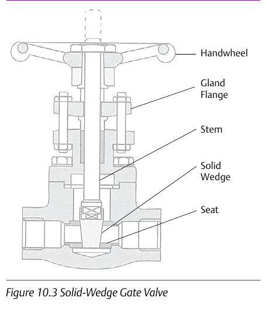

The solid wedge gate valve is the simplest, most common design

The solid wedge gate valve is the simplest, most common design — but its rigid wedge geometry is the baseline every other variant is a response to a specific limitation of. (Content credited to IPT's Pipe Trades Handbook by Robert A. Lee.) Component Index: cvh-cmp-solid-wedge-gate-valve.